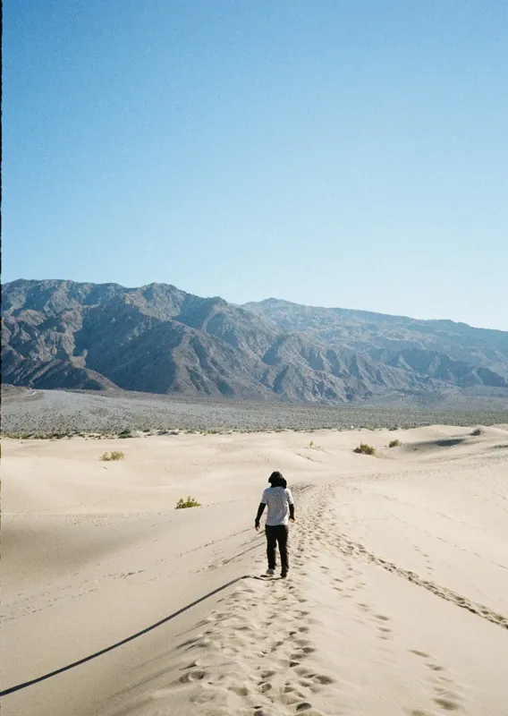
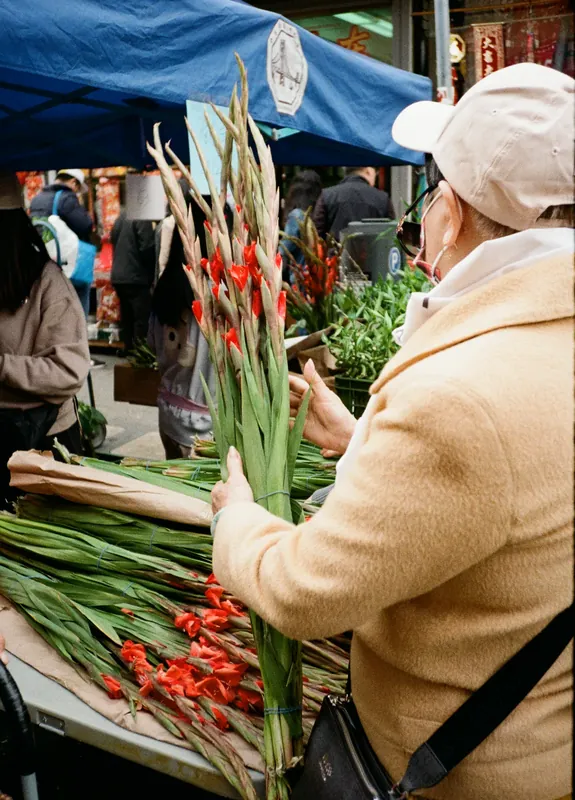
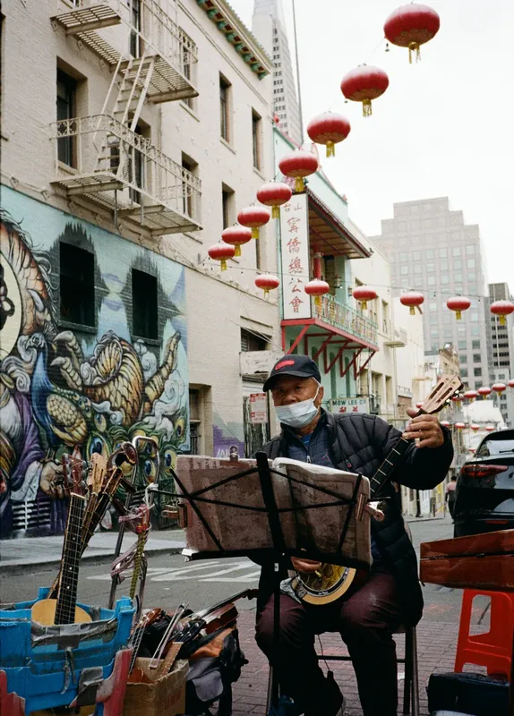
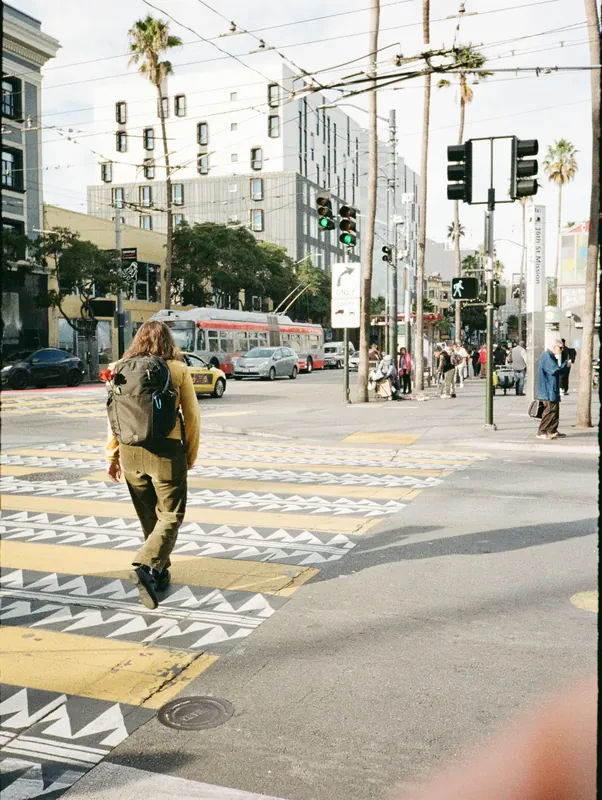
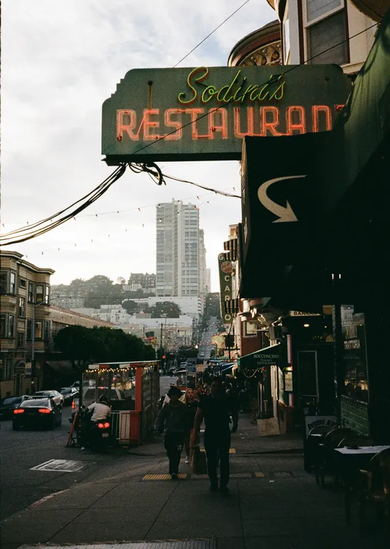
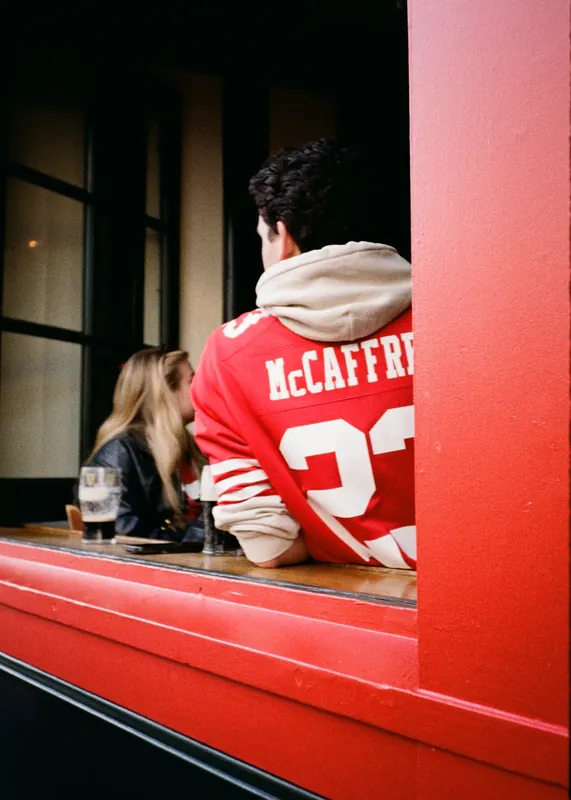
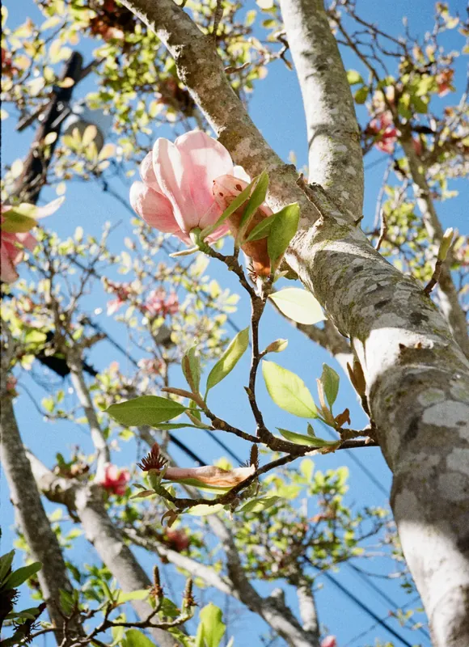
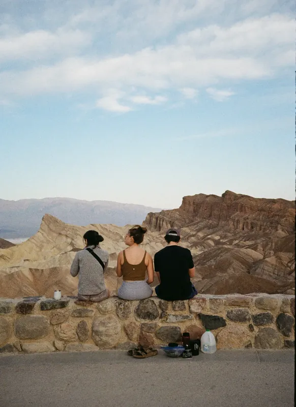

04
Roll 679Chinatown to the Dunes · 唐人街到沙丘
A
B
C
D
E
这一卷走得最远。前半在城里：花市的剑兰扎成捆，红的一端朝上，举过人群；笼子里探出一只狗；灯笼在街的上方连成一条线。
后半突然进了沙漠。沙上的纹路每天被风重画一次，走上去的脚印撑不过一个下午。
有一张里，一个人在很远的地方往上走。不放一个人进去，没人能看出这些沙有多高——尺度这种东西，得靠另一个人来说明。


风每天把沙丘重写一遍，从不留底稿。卷 679






本卷共 54 帧版面选用 11 张，整卷见上方联系表。半格 18×24，旧金山 · 死亡谷。